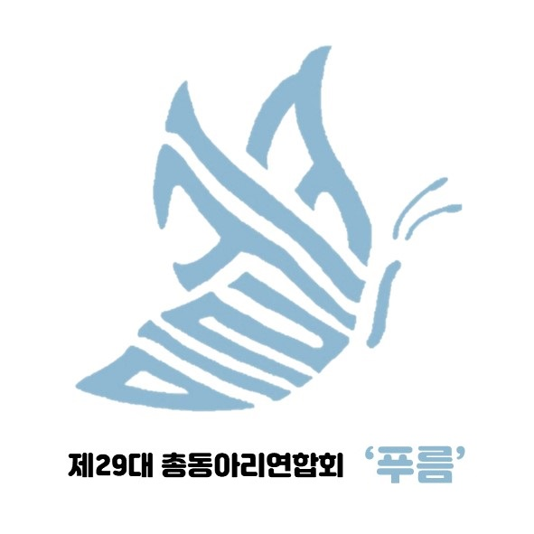
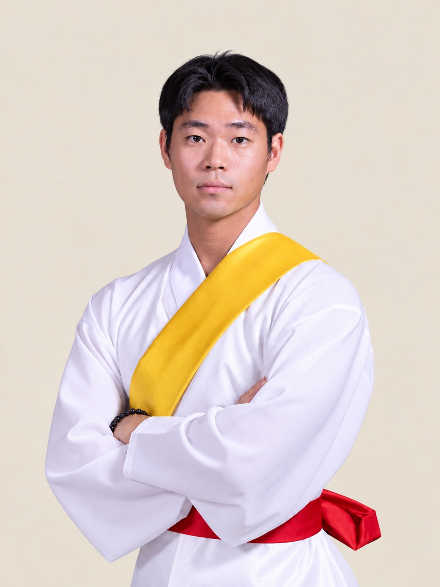

2026.07.13 ~ 2026.07.23
2026 피지컬 AI 부트캠프
시뮬레이션에서 사족보행 정책을 학습·실행하고, 설정과 보상 변경이 동작에 미치는 영향을 확인했습니다.
- 초기 자세·관절 순서·Action Scale과 제어 강성·감쇠·토크 제한 등 학습 환경 및 로봇 제어 설정 점검
- 보상 설정 조정과 재학습 후 보행 동작 및 단차·계단 지형에서의 실행 관찰
단기 교육 · 시뮬레이션 실습
DONGCHAN SHIN · PORTFOLIO
조직 운영·통신 업무·교육 지원 등 직접 수행한 활동
활동별 기간과 역할, 실제 수행한 일
Military Service
유선통신망·CCTV와 케이블을 구축·유지보수하고 통신장비를 운용했습니다. 분대장으로서 병력·임무 관리, 작업 교육과 인수인계 문서 작성을 담당했습니다.
2024.01 ~ 2025.07
활동 자세히 보기 ↗Student Association
2년간의 공백 이후 운영 기반을 재구축하고, 대학 간 교류와 학생 나들이·봉사활동 준비, 추가 예산 협의를 담당했습니다.
2021.11 ~ 2022.10
활동 자세히 보기 ↗
Club & Performance
부원 교육과 악보 제작·배포, 악기·악기채 수리, 공연 기획·연출과 무대·음향 운영에 참여했습니다.
활동 2019.03 ~ 2025.11 · 회장 재임 2020.11 ~ 2021.11
활동 자세히 보기 ↗
Part-Time Job
부서별 행정 지원, 교육 운영 지원, 자료 취합·정리와 콘텐츠 검수 등 실제 근로 이력을 기간과 업무별로 정리했습니다.
2019.09 ~ 2026.10 · 한국기술교육대학교 · 비연속 근로
활동 자세히 보기 ↗교육 이력
2026.07.13 ~ 2026.07.23
시뮬레이션에서 사족보행 정책을 학습·실행하고, 설정과 보상 변경이 동작에 미치는 영향을 확인했습니다.
단기 교육 · 시뮬레이션 실습